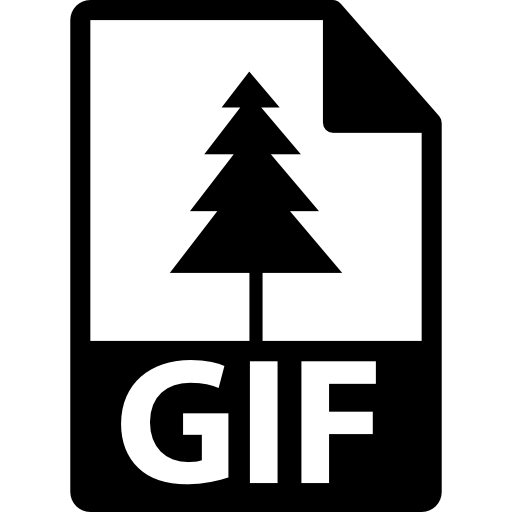
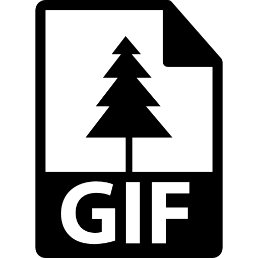

¿Cómo inició makemake?
Makemake inició en junio del 2021, primeramente llamado Urano, Su finalidad es almacenar archivos en la nube de manera gratuita, sin ningun costo.
¿Porqué se llama makemake?
Se llama makemake gracias a un pequeño planeta en el sistema solar el cual se ve reflejado en el logo, también porque el nombre Make-Make significa una deidad polinésica presente en la mitología pascuense, el cual es símbolo de guerra y fertilidad.
¿Qué tipos de archivos almacena makemake?
Se basa en el almacenamiento de archivos como imágenes JPG, PNG, archivos PDF, Word, Excel, Powerpoint, GIFS, Vídeos MP4 y Audios MP3, (también almacena aplicaciones y/o editores de texto para crear sitios web o para programar, cabe recalcar que las aplicaciones almacenadas podrán ser descargadas en cualquier equipo por lo tanto los videojuegos almacenados también podrán ser descargados sin problema alguno en cualquier equipo).
(Click en cada logo para ver su definición, (en el logo de las aplicaciones como Microsoft Word, Microsoft Excel y Microsoft Powerpoint ubiqué el enlace para poder adquirirlas))

 

¿Qué es un almacenamiento en la nube?
El almacenamiento en la nube, del inglés cloud storage, es un modelo de almacenamiento de datos basado en redes de computadoras, ideado en los años 1960,1 donde los datos están alojados en espacios de almacenamiento virtualizados, por lo general aportados por terceros.
El almacenamiento en nube posee las mismas características que la computación en nube con respecto a agilidad, escalabilidad, "elasticidad" y multiposesión. Se considera que el concepto se forjó en la década de los años 1960 por Joseph Carl Robnett Licklider. Desde esos años, la computación en nube se fue desarrollando en varias áreas. Las implementaciones recientes se deben a la Web 2.0. Esto se debió a que las grandes velocidades de ancho de banda y los bajos costes de almacenamiento y procesamiento no se extendieron hasta finales de los años 1990, lo cual retrasó la implementación y el desarrollo masivo de las soluciones basadas en computación en nube. Solo algunas entidades tenían la infraestructura para desarrollar estos conceptos.
Definición tomada de: